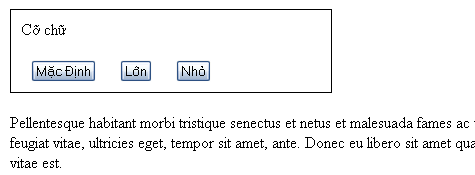
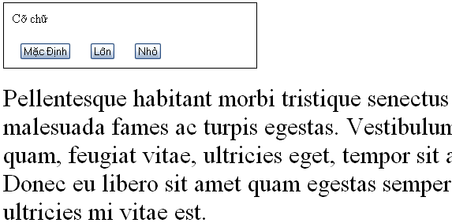

Các hiệu ứng động của jQuery sẽ làm cho trang web của bạn thêm phần sinh động. Jquery cho phép bạn ẩn hiện, trượt lên trượt xuống các thành phần của trang web. Bạn cũng có thể cho nó xảy ra cùng một lúc hoặc theo thứ tự định trước. Trong phần này chúng ta sẽ tìm hiểu các hiệu ứng jQuery và kết hợp chúng để tạo ra những hiệu ứng hay.
Trước khi chúng ta học những hiệu ứng jQuery, chúng ta cần xem lại một chút về CSS. Trong những chương trước đây chúng ta thay đổi giao diện của các thành phần trên trang bằng cách khai báo thuộc tính của class trong một stylesheet riêng biệt. Sau đó chúng ta thêm hoạc loại bỏ những class đó bằng jQuery. Về cơ bản thì cách này nên được sử dụng để thêm CSS vào HTML bởi vì nó tôn trọng quy luật tách riêng phần trình bày và cấu trúc. Tuy nhiên, đôi khi chúng ta muốn áp dụng style cho những thành phần chưa được, hoặc khó mà được, định dạng bằng stylesheet. Nhưng rất may mắn là jQuery có phương thức .css() để sử dụng cho những trường hợp này.
Phương thức này hoạt động bằng cả hai cách lấy và đăt. Để lấy giá trị của một thuộc tính, chúng ta chỉ cần chuyển tên của thuộc tính đó thành một một chuỗi, dạng như .css(‘backgroundColor’). Jquery có thể hiểu được những thuộc tính kết hợp bởi nhiều từ và nối với nhau bằng dấu – như là trong CSS (‘background-color’), hoặc dạng viết hoa chữ cái đầu như là (‘backgroundColor’). Để định dạng thuộc tính style, phương thức .css() có hai cách sử dụng. Cách thứ nhất chỉ nhận một cặp thuộc tính – giá trị. Cách thứ hai là nhận một tập hợp các cặp thuộc tính – giá trị.
Những người đã quen với JavaScript sẽ nhận ra đây là dạng đối tượng trực kiện JavaScript.
Chú ý: Các giá trị số không dùng dấu ngoặc kép trong khi giá trị chuỗi phải có dấu ngoặc kép. Tuy nhiên, khi sử dụng bản đồ ký hiệu, dấu ngoặc kép không bắt buộc cho những tên thuộc tính được viết dưới dạng in hoa chữ cái đầu.
Chúng ta sử dụng phương thức .css() cũng giống như cách chúng ta đã sử dụng .addClass(). Bằng cách gán nó cho một Selector sau đó thì Bind nó vào một sự kiện. Để minh hoạ, chúng ta sẽ sử dụng bộ nút thay đổi định dạng trong chương 3, nhưng với mã HTML khác.
Với một chút định dạng CSS cơ bản chúng ta có được hình dưới đây.
Khác với bộ nút ở chương trước, trong chương này chúng ta sẽ sử dụng phần tử < button >. Khi người dùng nhấp chuột vào nút Lớn hoặc Nhỏ sẽ tăng hoặc giảm cỡ chữ trong thẻ < div class=’speech’ >. Cuối cùng họ cũng có thể nhấn vào nút Mặc Định để trả cỡ chữ về giá trị ban đầu.
Nếu chúng ta chỉ muốn tăng cỡ chữ một lần với một giá trị đặt trước thì chúng ta vẫn có thể sử dụng phương thức .addClass(). Nhưng lần này chúng ta sẽ cho phép người dùng nhấp chuột nhiều lần vào nút, và mỗi lần nhấp cỡ chữ sẽ tăng hoặc giảm dần lên. Tất nhiên bạn cũng có thể tạo ra nhiều class và gán chúng cho mỗi lần nhấp chuột và sau đó chúng ta cho chạy vòng lặp qua từng class. Nhưng làm như thế nó thủ công quá và rất mất thời gian, cho nên cách lẹ hơn sẽ là lấy cỡ chữ của đoạn văn đó trước, sau đó thì tăng nó lên với giá trị mình muốn. Trong ví dụ này chúng ta sẽ cho tăng cỡ chữ lên 40% mỗi khi người dùng nhấp chuột.
Đoạn mã của chúng ta sẽ bắt đầu bằng $(document).ready() và bộ xử lý sự kiện $(‘#switcher-large’).click()
Để biết được cỡ chữ của đoạn văn đó là bao nhiêu rất đơn giản, jQuery có phương thức .css() cho phép bạn làm việc này. Tuy nhiên phương thức này lại trả về giá trị có thêm cái đuôi ‘px’, ví dụ là đoạn văn có kích thước chữ là 16px thì giá trị trả về sẽ là 16px. Cho nên chúng ta phải tìm cách cắt cái đuôi ‘px’ đó đi và chỉ giữ lại phần giá trị số là 16. Một điểm nữa là khi chúng ta định sử dụng một đối tượng jQuery nhiều lần, bạn nên nhớ lại selector bằng cách lưu đối tượng đó vào một biến.
Ở dòng code thứ 2 chúng ta đã tạo ra một biến là $speech và lưu đối tượng jQuery vào đó. Bạn cũng nên lưu ý cách tôi đặt tên biến bắt đầu bằng dấu $, bởi vì trong javaScript bạn hoàn toàn có thể sử dụng dấu $ để đặt tên cho biến. Cho nên đây là cách để nhắc nhở chúng ta về sau là biến này đang chứa một đối tượng jQuery.
Trông bộ xử lý .click(), chúng ta sử dụng hàm parseFloat() để cắt đi phần đuôi ‘px’ và chỉ giữ lại phần giá trị số. Hàm parseFloat() sẽ kiểm tra một chuối theo thứ tự từ trái qua cho đến khi nó gặp một ký tự không phải là dạng số. Chuỗi số sẽ được biến thành dạng số thập phân. Trong ví dụ này nó sẽ biến chuỗi ’16′ thành dạng số 16 (quá giỏi >:<) và tất nhiên nó cũng sẽ cắt phần đuôi 'px' đi bởi vì nó không phải là số. Còn trong trường hợp chuỗi đó bắt đầu bằng chữ thay vì là số, hàm .parseFloat() sẽ trả về một giá trị là NaN, là chữ viết tắt của Not A Number (không phải số). Hàm parseFloat() có argument thứ hai để đảm bảo rằng giá trị số trả về dưới dạng hàng chục chứ không phải các dạng khác.
Cuối cùng chúng ta chỉ cần nhân biến num với 1.4 (tăng 40%) và sau đó đặt kích cỡ chữ bằng cách kết hợp num với ‘px’
Lưu ý: Phương trình num *= 1.4 là dạng viết tắt phổ biến. Nó tương đương với num = num * 1.4. Nếu bạn thấy cách viết thường dễ hiểu hơn thì bạn cũng có thể sử dụng. Còn nếu không bạn cũng có thể dùng cách viết trên cho các phương trình khác như tính cộng num += 1.4, tính trừ num -= 1.4, tính chia num /= 1.4 và chia với số dư num %= 1.4.
Bây giờ để nút Nhỏ Hơn có thể hoạt động, chúng ta sẽ chia num /= 1.4. Hơn nữa chúng ta sẽ kết hợp cả hai phép tính trên vào một bộ xử lý .click() cho tất cả các phần tử < button > nằm trong thẻ < div id=’switcher’>. Sau khi đã tìm ra được giá trị số, và dựa vào ID của nút nào được nhấn, chúng ta sẽ sử dụng phép nhân hoặc chia. Dưới đây là đoạn mã để làm việc này.
Nhớ lại ở chương 3 chúng ta có thể lấy thuộc tính id của một phần tử DOM bằng cách sử dụng từ khoá this, trong trường hợp này nó xuất hiện trong mệnh đề if … else. Làm như vậy thì nó hiệu quả hơn là phải tạo ra một đối tượng jQuery chỉ để kiểm tra giá trị của một thuộc tính.
Tiếp theo chúng ta cũng phải làm cho nút Mặc Định hoạt động để người dùng có thể trả về giá trị mặc định lúc ban đầu. Việc chúng ta cần làm là lưu kích thước font chữ của đoạn văn vào một biến ngay khi DOM sẵn sàng. Sau đó chúng ta có thể gọi lại giá trị này mỗi khi nút Mặc Định được nhấp. Chúng ta cũng có thể sử dụng thêm một mệnh đề else … if nữa, nhưng có lẽ mệnh đề Switch trong trường hợp này là hợp lý hơn
Ở đoạn code trên chúng ta vẫn kiểm tra giá trị của this.id và thay đổi kích thước chữ dựa vào nó, nhưng nếu giá trị của nó không phải là ‘switcher-large’ hoặc ‘switcher-small’ thì nó sẽ mặc định là kích cỡ ban đầu.
Hai phương thức .hide() và .show(), khi không có tham số, có thể được coi là phương thức rút gọn của .css(‘display’,’string’), ở đó ‘string’ là một giá trị bất kỳ. Hiệu ứng đạt được của hai phương thức này thì cũng đơn giản như tên gọi, có nghĩa là nó sẽ ẩn hoặc hiện một thành phần nào đó.
Phương thức .hide() sẽ làm cho thuộc tính inline style cho các phần tử phù hợp trở thành display:none. Nhưng cái hay của phương thức này là ở chỗ nó ghi nhớ giá trị thuộc tính của display (thường là inline hoặc block) trước khi nó bị đổi thành none. Ngược lại, phương thức .show() lại trả về giá trị thuộc tính display ban đầu trước khi nó bị biến thành display:none.
Tính năng này của .show() và .hide() đặc biệt có ích khi bạn muốn ẩn một thành phần nào đó có thuộc tính display mặc định đã được khai báo trong stylesheet. Ví dụ, phần tử
Để minh hoạ cho tính năng trên, chúng ta sẽ thêm một đoạn văn bản thứ hai và một thẻ link “read more” vào sau đoạn văn thứ nhất.
Khi DOM sẵn sàng thì đoạn văn thứ hai bị ẩn đi
Khi đường link Read More được click thì đoạn văn thứ 2 sẽ xuất hiện và chữ Read More sẽ bị ẩn đi
Dòng mã mà bạn cần lưu ý ở trên là đoạn return false. Bởi vì mặc định của đường liên kết mỗi khi được nhấp là sẽ liên kết đến trang khác hoặc phần nào đó. Nhưng khi ta thêm dòng return false, nó sẽ giúp ngăn chặn mặc định của đường liên kết.
Hai phương thức .show() và .hide() ở trên tuy ngắn gọn và dễ sử dụng nhưng nó lại không được “mướt” cho lắm, cho nên ở phần tiếp theo chúng ta sẽ làm cho nó mướt hơn.